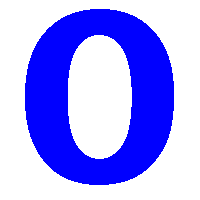

Pozycyjne systemy liczbowe
Słowniczek
- Binarny
- pozycyjny system liczbowy, w którym podstawą jest liczba 2, a do zapisu liczb potrzebne są tylko dwie cyfry: 0 i 1.
- Decymalny
- pozycyjny system liczbowy, w którym podstawą jest liczba 10; do zapisu liczb stosuje się 10 cyfr: 0, 1, 2, 3, 4, 5, 6, 7, 8, 9.
- Heksadecymetralny
- pozycyjny system liczbowy, w którym podstawą jest liczba 16. Do zapisu liczb w tym systemie potrzebne jest szesnaście znaków.